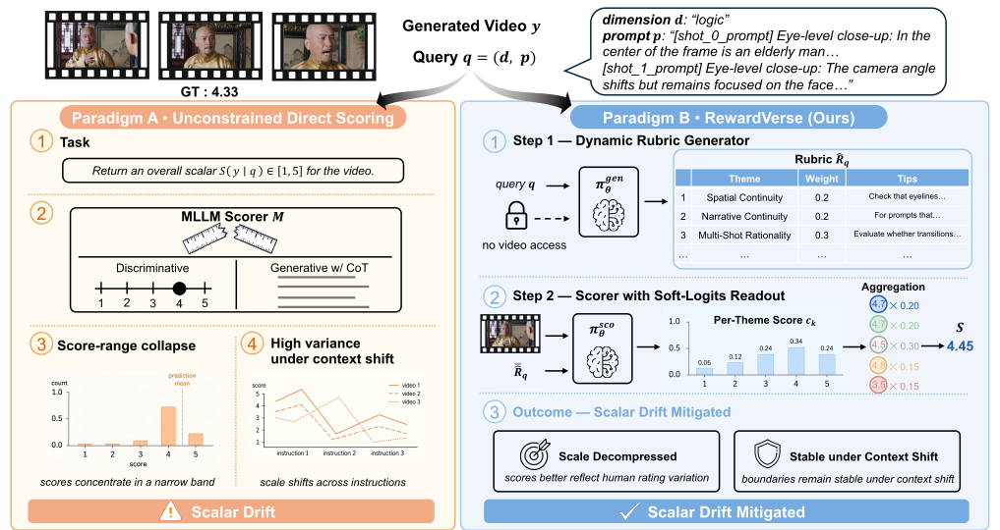
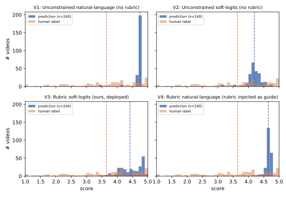
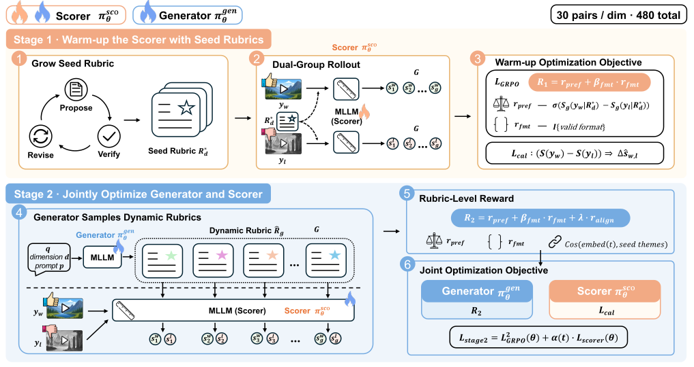
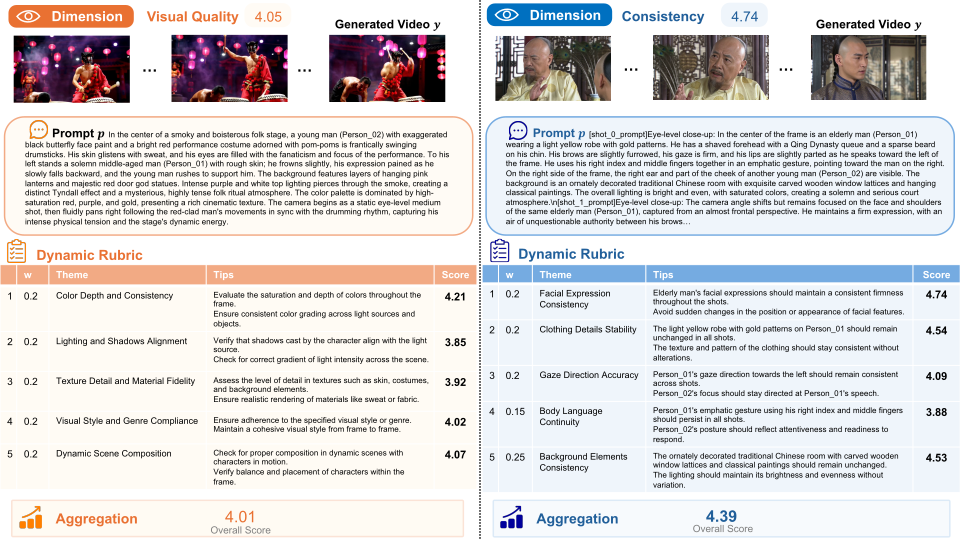

A dynamic rubric placed between the evaluation query and the scorer mitigates scalar drift in video reward models — with state-of-the-art pointwise correlation and pairwise preference agreement from only 30 preference pairs per dimension.
Professional annotators rarely assign a score in one shot: they first decompose the task into explicit criteria, then judge against them. Video reward models largely skip that criterion-setting stage, so their internal scoring standard drifts with every prompt. RewardVerse restores it by making the rubric a learned intermediate representation.
RewardVerse first generates a query-adaptive rubric (themes, weights, tips) from the
evaluation query alone — the generator never sees the candidate video — and then scores
each theme with a soft-logits readout over the rating tokens 1–5,
aggregating them by their weights into a continuous pointwise reward.
Rubric-Guided Policy Optimization (RGPO) trains this pipeline in two GRPO stages: a seed-rubric scorer warm-up followed by joint optimization of the rubric generator, with a human-aligned margin calibration loss throughout. The result is a reward that keeps its scale, stays stable under prompt paraphrasing and input reordering, and transfers to pairwise preference benchmarks beyond its training dimensions.

Directly mapping a subjective, multi-dimensional video to one scalar is an unconstrained task: the model has no explicit anchor for what each point on the 1–5 scale should mean. The scoring standard then drifts in two interacting ways.
Pointwise scores concentrate in a narrow “safe” high band. The gap between preferred and non-preferred videos shrinks, leaving downstream RL with near-flat gradients.
Without anchors, the scale moves when instructions are paraphrased or candidate order is swapped, so the same content receives inconsistent scores or preferences.

One shared MLLM plays two roles — a rubric generator and a scorer — distinguished by role-specific prompts. Stage 1 builds a human-aligned scorer with frozen seed rubrics; Stage 2 lets the generator adapt per query while the scorer stays calibrated.

The generator never sees the candidate video, which prevents biased, video-dependent criteria. Rubrics are reused across videos with the same query — the marginal cost per video is small.
Instead of parsing digits from text (up to 53.3% parse failures in free-form JSON), the score is the expected value over the logits of the five rating tokens: a 0% format-failure rate by construction.
Each video is scored independently, sidestepping the order sensitivity of A/B prompting (56.2% residual flip rate even with a rubric) that would inject noise into RL gradients.
RewardVerse is trained on Qwen2.5-VL-7B with 480 preference pairs and compared against six state-of-the-art video reward models (VideoScore-v1.1, VideoScore2, UnifiedReward, VideoReward, VisionReward, Q-Scorer).
Macro-averaged correlation over the 16 fine-grained dimensions:
Best PLCC on 14/16 dimensions — e.g. Logic 0.750 vs. 0.593 (next-best) and Action 0.566 vs. 0.390. External scorers can even go negative on cognitive axes (VideoScore-v1.1: −0.245 on Logic).
Pairwise agreement, with ties / without ties:
Despite training on only 30 pairs per dimension, RewardVerse beats the strongest non-oracle baseline by +7.1 points on the seen split and takes the best accuracy on the unseen Text Alignment split — mitigating scalar drift also improves pairwise decisions.
| Configuration | PLCC ↑ | SRCC ↑ |
|---|---|---|
| Full RGPO | 0.530 | 0.416 |
| (a) w/o Stage-1 scorer warm-up | 0.431 | 0.355 |
| (b) w/o Stage-2 joint optimization | 0.456 | 0.364 |
| (c) w/o hierarchical tips (flat rubric) | 0.497 | 0.398 |
| (d) V2-Raw (no rubric, zero-shot) | 0.361 | 0.234 |
| (e) V2-Training (no rubric, trained) | 0.439 | 0.351 |
Both stages are essential: removing the warm-up costs 0.099 PLCC, and skipping joint optimization costs 0.074 PLCC. Under the same budget, rubric-free training (e) barely moves past its zero-shot counterpart (d).
| Model | σ(ŝ) | Bias | PLCC | SRCC |
|---|---|---|---|---|
| Pre-RGPO | 0.457 | +0.610 | 0.240 | 0.222 |
| Post-RGPO | 1.332 | +0.164 | 0.505 | 0.458 |
| Protocol | Fail | Decided | PLCC |
|---|---|---|---|
| PR1 pairwise A/B | 0.000 | 30/30 | — |
| PR2 pointwise integer | 0.467 | 9/30 | 0.313 |
| PR3 multi-theme integer | 0.533 | 6/30 | 0.374 |
| PR4 multi-theme soft-logits | 0.000 | 30/30 | 0.229 |
Free-form score generation is fragile: parsing fails on 46.7% / 53.3% of forward passes for integer protocols, and its quantization leaves only 9/30 and 6/30 decided pairs. PR4 has a 0% failure rate by construction. Under the same protocol, RGPO also cuts the normalized prompt-perturbation variation from 0.206 to 0.085 (−58.7%).
| Metric | Base | VideoReward | RewardVerse |
|---|---|---|---|
| Imaging Quality | 0.640 | 0.648 | 0.653 |
| Human Action | 0.900 | 0.800 | 0.950 |
| Background Consistency | 0.919 | 0.916 | 0.920 |
| Temporal Flickering | 0.943 | 0.938 | 0.944 |
| Motion Smoothness | 0.966 | 0.960 | 0.966 |
| Subject Consistency | 0.898 | 0.881 | 0.894 |
| VBench-Quality (6D) | 0.808 | 0.804 | 0.809 |
| VBench-Text (3D) | 0.428 | 0.392 | 0.446 |
Per-video latency on a single H20 (bf16, greedy, FPS = 2, 64-frame budget):
Rubric generation adds only ~18% latency, and because the rubric depends on the query rather than the video it can be generated once and reused across all candidates of the same prompt.
The generator adapts the granularity of its tips to the target dimension: abstract for global, technical or aesthetic axes, and grounded in the specific entities of the prompt for identity- or scene-bound axes.

If you find this work useful, please cite it. Code, rubrics, data splits and trained reward models will be released upon acceptance.
@misc{tang2026rewardverserubricguidedpolicyoptimization,
title={RewardVerse: Rubric-Guided Policy Optimization for Video Reward Modeling},
author={Zhenchen Tang and Yang Li and Songlin Yang and Bo Peng and Xiaotong Zhao and Shuai Li and Haotian Fan and Alan Zhao and Jing Dong},
year={2026},
eprint={2609.22947},
archivePrefix={arXiv},
primaryClass={cs.CV},
url={https://arxiv.org/abs/2609.22947},
}
github.com/2kxx/RewardVerse
Watch / star for the release.
Download the PDF
25 pages incl. appendix.